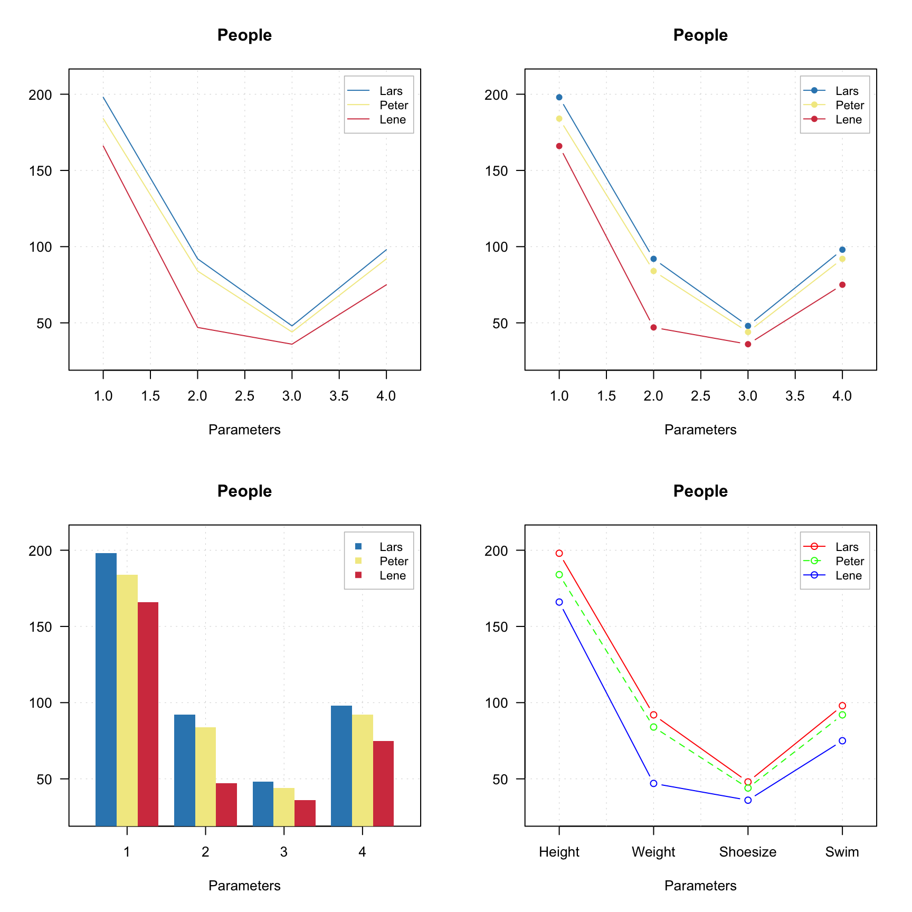
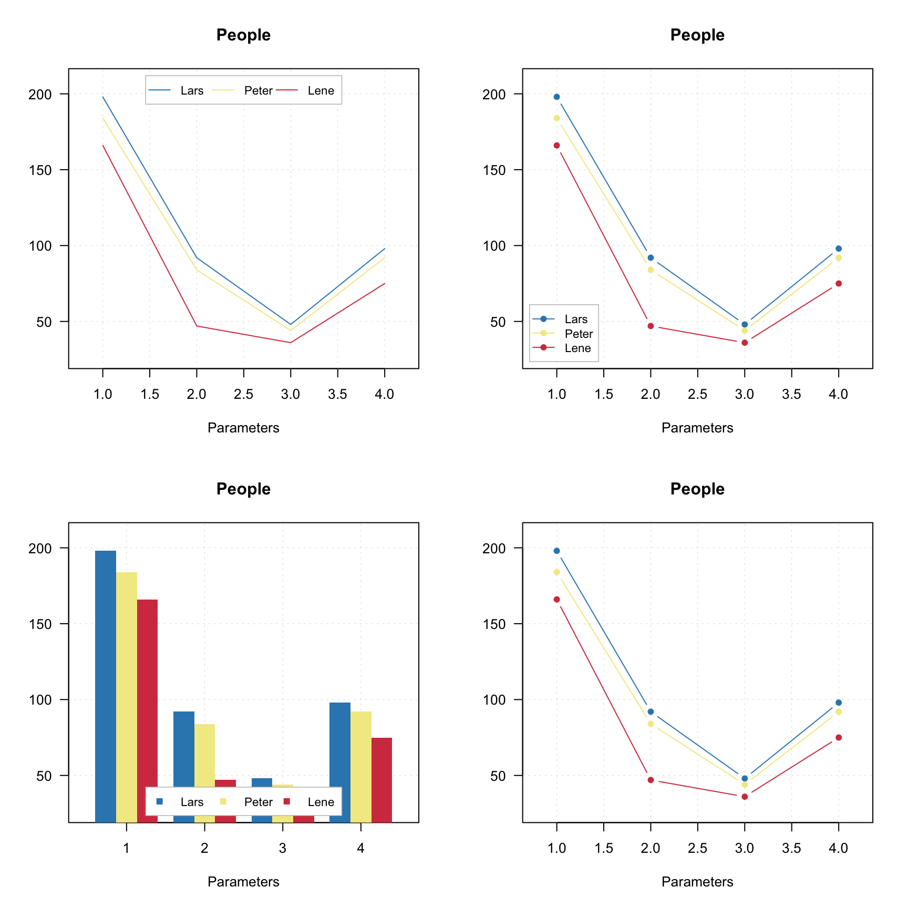
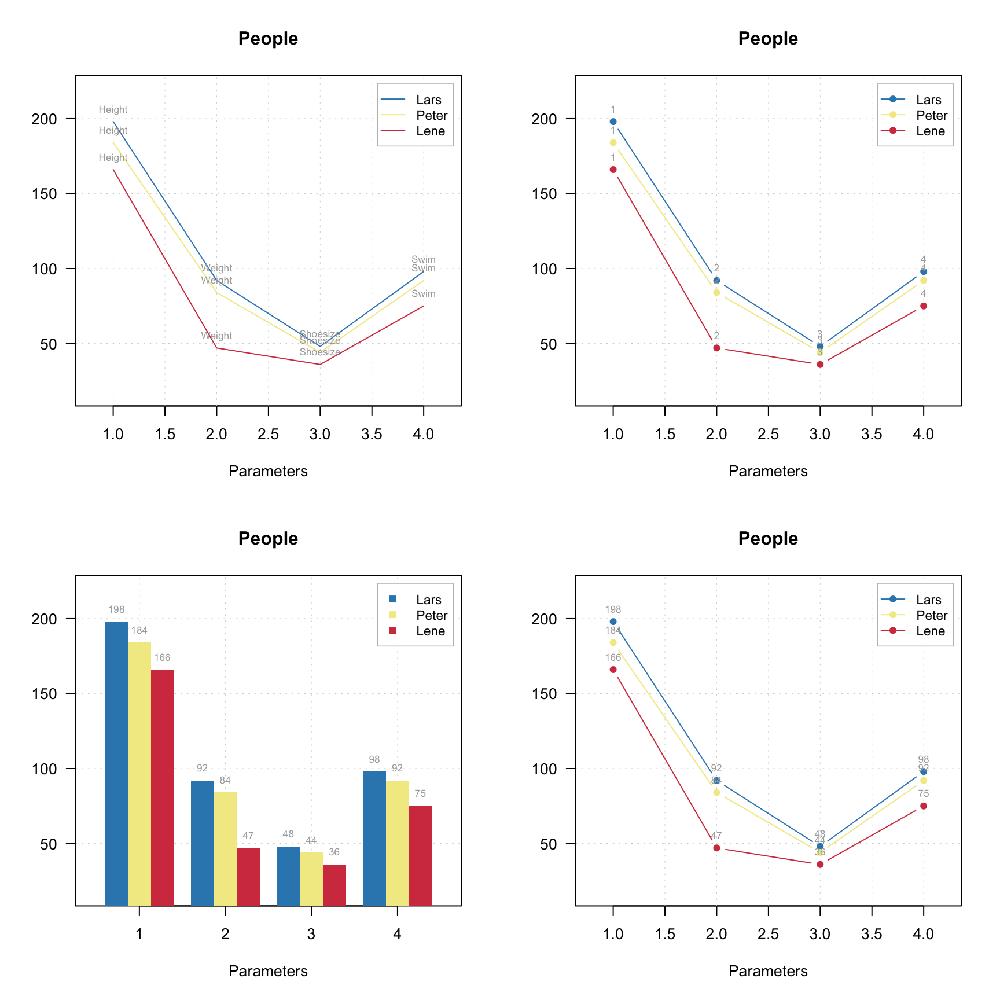

Plots for groups of objects
The package has another method for creating plots, mdaplotg(), which aims at making plots for groups of objects. It can be several groups of points, lines or bars, where evry group has its own attributes, such as color, marker, line type and width, etc. There is a simple criterion to distinguish between the simple and group plots: group plots usually need a legend and simple plots — not. The mdaplotg() method allows to do a lot of things (e.g. split data into groups, add a legend and labels, etc) much easier and this section will show most of the details.
I will use the People dataset for most of the examples, so let us load it first, add some attributes, and exclude column with income.
data(people)
attr(people, 'name') = 'People'
attr(people, 'xaxis.name') = 'Parameters'
people = mda.exclcols(people, 'Income')There are three ways to provide data sets for making the group plots. Let’s discuss them first and then talk about some extra features.
One matrix or data frame
If dataset is a matrix or a data frame, mdaplotg() will make a line, scatter-line or a bar plot, considering every row as a separate group. This can be useful, when, for example, you want to show how explained variance depends on a number of components for calibration and test set, or how loadings for first two components look like. If you want to change any parameters, like pch, lty, lwd, col or similar you need to provide either a vector with value for each group or one value for all groups. Axis limits, ticks, ticklabels, etc. can be defined similarly to the simple plots. Here are some examples.
# let's create a small subset of the people data
p = mda.subset(people, subset = c(1, 2, 4), select = c('Height', 'Weight', 'Shoesize', 'Swim'))
par(mfrow = c(2, 2))
mdaplotg(p, type = 'l')
mdaplotg(p, type = 'b')
mdaplotg(p, type = 'h', xticks = 1:4)
mdaplotg(p, type = 'b', lty = c(1, 2, 1), col = c('red', 'green', 'blue'), pch = 1,
xticklabels = colnames(p))
As you can see, mdaplotg() automatically created the legend and set colors, line parameters, etc. correctly. You can change position of the legend using same names as for basic legend() command from R, or hide it using parameter show.legend = FALSE, as it is shown below.
par(mfrow = c(2, 2))
mdaplotg(p, type = 'l', legend.position = 'top')
mdaplotg(p, type = 'b', legend.position = 'bottomleft')
mdaplotg(p, type = 'h', legend.position = 'bottom')
mdaplotg(p, type = 'b', show.legend = F)
Group plot also allow to show labels, in this case they can be either values, names or indices of the columns.
par(mfrow = c(2, 2))
mdaplotg(p, type = 'l', show.labels = T)
mdaplotg(p, type = 'b', show.labels = T, labels = 'indices')
mdaplotg(p, type = 'h', show.labels = T, labels = 'values')
mdaplotg(p, type = 'b', show.labels = T, labels = 'values')
List with matrices or data frames
In this case every element of the list will be treated as a separate group. This way allow to make scatter plots as well and line plots with several line in a group. Barplot can be also made but in this case first row from each datasets will be used. If you use names when create the list, the names will be taken as legend labels, otherwise method will look at attribute 'name' for each data set.
In the example below we split People data to males and females and show the group plots.
sex = people[, 'Sex']
m = mda.subset(people, subset = sex == -1)
f = mda.subset(people, subset = sex == 1)
d = list(male = m, female = f)
par(mfrow = c(2, 2))
mdaplotg(d, type = 'p')
mdaplotg(d, type = 'b')
mdaplotg(d, type = 'h')
mdaplotg(d, type = 'b', lty = c(1, 2), col = c('red', 'blue'), pch = 1)
Most of the things described in the previous subsection will work similarly for this case. We will just add a bit more details on how labels and excluded rows are processed for the scatter plots. By default labels are row names or indices. In mdaplotg() you can not provide vector with manual values, so the best way to change them is to assign them as the row names. Indices are unique within each group, so if you have, e.g. three groups of points, there will be three points with index “1”, three with “2”, etc.
Use factors to split a dataset into groups
One more way to split data set into groups is to provide one or several factor columns using argument groupby. In this case mdaplotg() will find all combinations of the factor levels and split rows of dataset to the corresponding groups. In the example below we use variables Region and Sex to make plots for four groups.
sex = factor(people[, 'Sex'], labels = c('M', 'F'))
reg = factor(people[, 'Region'], labels = c('S', 'M'))
groups = data.frame(sex, reg)
par(mfrow = c(2, 2))
mdaplotg(people, type = 'p', groupby = groups)
mdaplotg(people, type = 'l', groupby = groups)
mdaplotg(people, type = 'b', groupby = groups)
mdaplotg(people, type = 'h', groupby = groups)
All parameters, described before, will work the same way in this case.